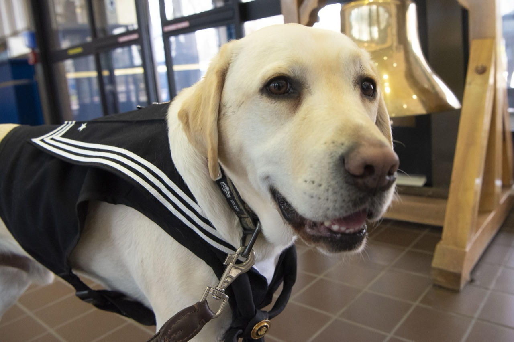
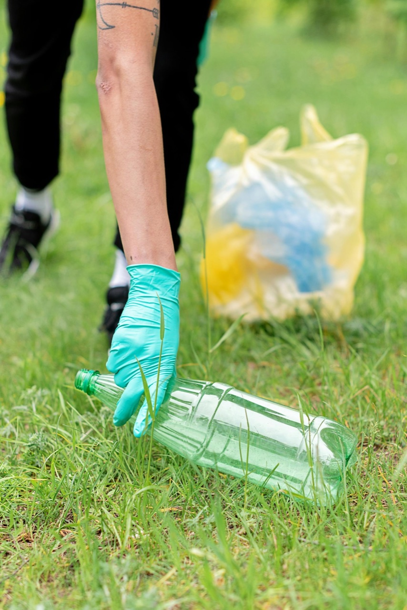
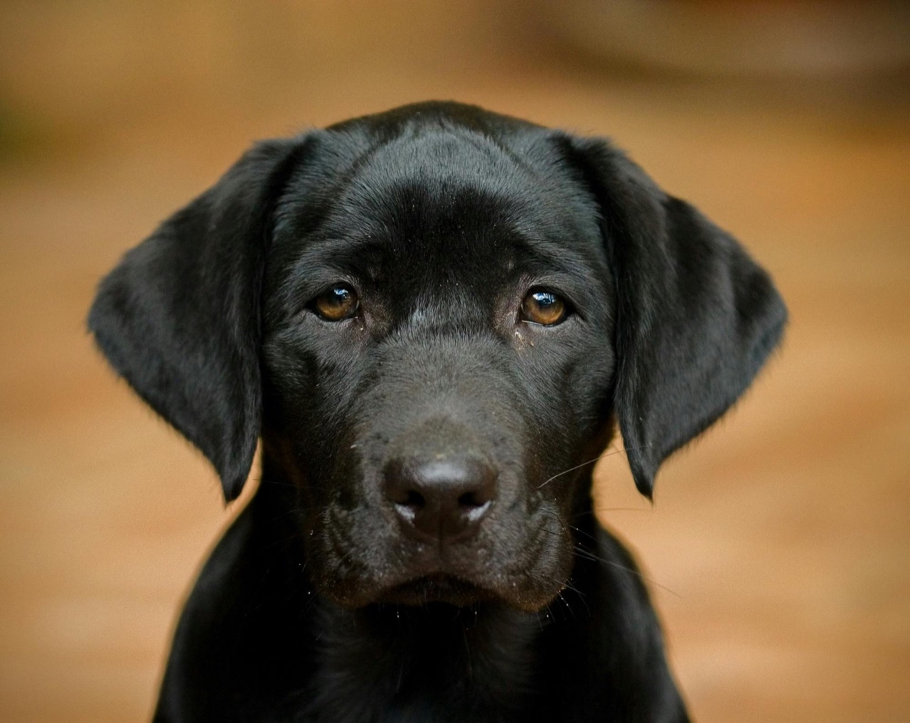

The argument has a birthday. In 1874 the Victorian polymath Francis Galton borrowed an old pairing, one Shakespeare had used in The Tempest for a "born devil, on whose nature nurture can never stick," and called it a convenient jingle of words. Nature, Galton wrote, is everything a man brings into the world with him; nurture is every influence that meets him after. The jingle stuck. We have argued over the ratio ever since, as though a human being were a debate with two sides.
I think there is a third side, and that it is the only one that was ever really yours. But the clearest way I know to see all three is not a person. It is a dog.
The oldest quarrel
For most of the century after Galton, each side took its turn being obviously right. John Locke had already declared, in his 1689 Essay Concerning Human Understanding, that the newborn mind is white paper, void of all characters, furnished entirely by experience, and the behaviorists made his blank slate a battle cry.
Give me a dozen healthy infants and my own specified world to bring them up in, and I'll guarantee to take any one at random and train him to become any type of specialist I might select, doctor, lawyer, artist, and yes, even beggar-man and thief.John B. Watson, 1924
It is one of the great boasts in the history of science, and the line almost no one quotes is the sentence Watson wrote right after it: I am going beyond my facts, and I admit it. Then the pendulum swung back. Thomas Bouchard's Minnesota Study of Twins Reared Apart found identical twins raised in different houses uncannily alike, two strangers reunited at thirty-nine who had each married a Linda, divorced, married a Betty, and named a son James Allan, and a new certainty hardened, the one in the title of Robert Plomin's Blueprint (2018): that inherited DNA explains us better than everything else combined. The doubters never left. Stephen Jay Gould and Richard Lewontin warned, with the memory of eugenics close behind them, that calling a trait genetic too quickly is how a society starts ranking its people. Even the heritable part refuses to sit still: the genetic share of intelligence does not fade as a child grows but climbs with age, from roughly forty percent in childhood toward eighty in adulthood, the so-called Wilson effect, as we drift into the lives our dispositions were quietly choosing all along.
The quarrel is mostly settled now, and the settlement is a truce. The science writer Matt Ridley gave it a name, Nature via Nurture: not nature or nurture but nature through nurture, genes that lie waiting for the world to switch them on, which is roughly what biologists mean by epigenetics. Both sides win, the least satisfying way an argument can end, and also the way most true things turn out.
The dog settles it
A dog settles that truce in a way no argument can, because we build one on purpose and can watch both forces at work. Take nature first. Every serious guide-dog school keeps its own breeding colony, for the plain reason that the temperament the job demands, steady nerves, low aggression, a wish to be near a person, is substantially heritable. A 1983 study by Goddard and Beilharz put the heritability of guide-dog success near forty-four percent: choose the parents well and the next litter comes truer. The honest catch is that breeding only stacks the odds. When the Darwin's Ark project sequenced thousands of dogs in 2022, it found that breed predicts only about nine percent of any individual animal's behavior. You bet on the bloodline, then you still have to meet the dog.
Now nurture. A puppy has a narrow window, roughly three to fourteen weeks, first charted by Scott and Fuller in their 1965 classic Genetics and the Social Behavior of the Dog, when the world writes on it in permanent ink. Miss it, the way a puppy mill does, and you get an adult that flinches at everything. Use it, with a volunteer who carries the pup onto trains and into supermarkets until the noise of the world goes quiet in its chest, and you get the calm the work requires. There is even a tender wrinkle: a 2017 study by Emily Bray and colleagues found that the pups of attentive, indulgent mothers, the ones who lay down so the milk came easy, washed out more often than the pups of mothers who stood up and made them work for it. A frictionless start, it turns out, is not the gift it looks like, even for a dog.
So a finished service dog is nature and nurture in plain view, and it is genuinely, movingly good. But notice that the recipe has exactly two ingredients, and for the dog that is the entire story. Sully did not decide to be faithful. He was bred faithful and then raised faithful, and we can love him without complication precisely because there is no one inside him deciding. That absence is the whole of what separates him from us.

The third thing
A person is not finished at two ingredients. There is a third input, so small and so constant that it hides in plain sight. You cross an empty parking lot, a wrapper slips from your hand and misses the can, and there is no one for a hundred yards. Do you walk back for it? Nothing depends on the wrapper. Everything depends on the answer, because you will meet some version of that question a few thousand times before the week is out, and the answers do not evaporate. They set, like plaster, into the shape of a person. Aristotle saw the mechanism plainly in the Nicomachean Ethics: we are not handed our characters, we build them, becoming just by doing just acts, becoming honest by telling the truth on the one afternoon it costs us something, and then again, until there is no longer a decision to make. To get the most out of a life, it seems, you have to put the most in.

This is the part our comfort fights hardest, because the wanted thing and the right thing are so seldom the same, and the distance between them is where a life is quietly won or lost. Chase the wanted thing, the easy and the pleasurable, and you step onto what the psychologists Brickman and Campbell named the hedonic treadmill, which resets to your old baseline every time; their famous follow-up found that even lottery winners drifted back toward their former mood. And you drift, too, without quite deciding to, toward taking more than you give. The trade is stark in the data: in a study by the psychologist Roy Baumeister and colleagues, people who measured their days by what they got reported being a little happier moment to moment, while the people who gave reported something the takers did not have, a life that felt like it meant something. Meaning, they found, is built from exactly the costly, future-facing, outward-turned acts a comfortable day is designed to skip.
I do not want to oversell it, because the world is not a vending machine for virtue. Ruthless people prosper all the time, and the gentlest givers can be played for fools; the organizational psychologist Adam Grant, studying givers and takers, found givers at both ends of the ladder, the most successful people and the least. Doing the hard right thing buys you depth, and steadiness, and the regard of the people worth having; it does not buy a yacht, and anyone who promises otherwise is selling something. What it reliably decides is subtler: what you do with your own pain. Hurt travels, in a pattern psychologists call displaced aggression; the wound a person will not face gets passed down the line, to a child, a partner, a stranger who did nothing to earn it. And yet the most important number here is a hopeful one. The cycle everyone dreads, abused children growing into abusers, is real, but it is not a law.
Most people, given the chance, choose to be the place where the hurt stops. That choosing is the third thing.
Pain is the door
Here is the hard truth folded inside the hopeful one: almost no one reaches for the third thing while life is comfortable. We reach for it when something breaks. Nearly every tradition that has thought seriously about people says so, each in its own accent. The Buddha made suffering the first of his Four Noble Truths, not a verdict but the door onto the path. Paul, in his letter to the Romans, wrote that suffering produces perseverance, perseverance character, and character hope (Romans 5:3-5). The Stoic Epictetus told his students that hardship is a sparring partner, that the divine pairs us with a rough opponent the way a trainer matches a wrestler, so that we might become Olympians.
The impediment to action advances action. What stands in the way becomes the way.Marcus Aurelius
This is the engine behind the oldest pattern of redemption, the one your own life has probably shown you: a person dealt bad blood and a worse childhood, headed nowhere good, broken hard enough by the consequences that they finally turn, and who becomes, of all people, one of the best you will ever know. The criminologist Shadd Maruna, comparing offenders who stopped with those who did not, found their histories nearly identical and only their stories different; the ones who changed had learned to own their past rather than blame it. But be careful, because the pain did not improve them. Pain on its own embitters at least as often as it deepens, and the science is unsentimental: Richard Tedeschi and Lawrence Calhoun, who named post-traumatic growth, insist the growth comes from the struggle, not the wound, and later reviews find genuine growth rarer than the inspirational posters claim. The comforting idea that a person must hit some redemptive rock bottom before they change is one addiction researchers increasingly doubt. What transforms is never the wound itself. It is the struggle the wound forces, met with a decision. Pain only opens the door; you still have to walk through it, and a great many never do, and some are simply shattered on the threshold.
The questions no one wants to answer
If pain is the teacher, the questions turn uncomfortable fast, and an honest essay has to sit in them rather than flinch. Start in the nursery. If a child needs friction to grow, do you raise it hard or soft? The data are almost rude in their consistency, and the answer is neither. The developmental psychologist Diana Baumrind spent decades showing that the steadiest adults come from authoritative parents, warm and demanding at once, high standards handed over inside unmistakable love; pure pressure and pure permissiveness both lose to it. Some manageable hardship helps, what researchers call a steeling or stress-inoculation effect, but only with a buffering adult to come home to; without that buffer the same stress turns, in the language of the Harvard Center on the Developing Child, from tolerable to toxic. And the dose that tempers one child shatters another. Work on differential susceptibility, the orchid and the dandelion, finds that some children wilt and some bloom under the very same push, and you usually cannot tell which you are raising until it is done. Behavior genetics adds a humbling footnote, argued by Judith Rich Harris in The Nurture Assumption: within the ordinary range, the parenting we agonize over explains far less of the finished adult than we ache to believe. Cruelty and neglect mark a person for life. Whether you were a little stricter or a little softer mostly washes out.
Then the darker question, the one with a body count. If your blood is loaded toward addiction or violence or despair, should you have children at all? Serious people once answered with a confident yes, provided we also cull, and built something monstrous on it. Galton, who gave us the jingle, also coined the word eugenics, and the movement that followed sterilized more than sixty thousand Americans against their will. In 1927 the Supreme Court waved it through, eight to one.
Three generations of imbeciles are enough.Oliver Wendell Holmes Jr., Buck v. Bell
The woman in that case was not what the Court called her. Carrie Buck had been committed to hide a rape, and her daughter, the supposed third generation of defectives, made the school honor roll. The whole edifice stood on a single lie, that a human fate is written cleanly in the blood, and the science says it is not. Heritability is a fact about populations, never a prophecy about a person; it shifts with circumstance; it loads the dice and never throws them. There is a fringe that still takes the dark view to its end, the philosopher David Benatar arguing in Better Never to Have Been that coming into existence is itself a harm, and it is worth naming only to set it down. The humane answer is also the true one. No one is sentenced by their ancestry, and the eugenicist's deepest error was not only his cruelty but his premise, the very premise the third thing exists to refute.
The same chance
All of it, the genes and the raising and the pain and the ten thousand small choices, presses toward a question the data cannot reach. Is any of it watched? Is there a grain to things that runs with the kind and against the cruel? Most of humanity has believed so. The Hindu and Buddhist traditions call it karma, the idea that intention and action ripen into consequence with no judge required to enforce it; the Christian scriptures say something close in Galatians, that whatever a man sows, that shall he also reap. The cleanest version may be the Bhagavad Gita's karma yoga, named in its verse 2.47, the discipline of acting rightly and surrendering any claim on the reward.
Honesty demands the hard footnote. The psychologist Melvin Lerner gave the human hunger to believe the world is fair a name, the just-world hypothesis, and charted its ugly shadow: in his experiments, the people who most needed the world to be just were the quickest to decide that a visibly suffering person had it coming. The rain, as the Gospel of Matthew admits, falls on the just and the unjust alike. And the modern temptation, to dress the belief in physics and say it all runs at the quantum level, will not survive a careful physicist. The deepest real mystery here, what the philosopher David Chalmers named the hard problem of consciousness, why there is any inner experience at all, is genuine and unsolved, but no accepted science says a mind bends reality, and quantum has never meant spiritual.
So let me mark the line between what I can show you and what I only believe, and then step over it on purpose. Here is the belief, offered as belief. I think we live inside some kind of moral order, woven in perhaps at a level we cannot yet see, where what you send out is not finally lost. I think every person who has ever lived is handed the same offer, the chance to turn and begin living in a way that is good, and that it becomes real the instant you want it badly enough to pay what it costs. And I think the saddest fact about us is the one the evidence keeps quietly confirming, that almost no one accepts the offer until they have hurt enough to stop refusing it, and that some carry it untouched to the grave, the chance still sitting there, never once reached for.

The dog never gets that offer. It also never needs it. Sully was made kind, and so he is kind, all the way down, and that seamlessness is the very thing that lets his goodness break your heart without once troubling your conscience. We are the other animal, the one with a gap between the impulse and the act, and into that gap goes everything we actually are: the wrapper picked up off the empty lot, the grievance finally laid down, the hard thing done well with no one watching and no reward coming.
The blood is dealt and the childhood is spent, and then the third thing opens, quietly, and waits. It does not close because you were born wrong, or raised wrong, or have already wasted years. It closes only when you do.
Photographs: Sully by Lisa Ferdinando (U.S. Department of Defense, CC BY 2.0); twins, U.S. Navy (public domain); German Shepherd by Noah Wulf (Wikimedia, CC BY-SA 4.0); Mira puppy by Jeangagnon (Wikimedia, CC BY-SA 3.0); litter by Mikhail Nilov and the Labrador by Paul Groom (Pexels).